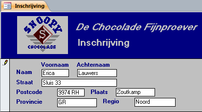

Een nieuw record toevoegen met een formulier waarmee je alleen gegevens toe kunt
voegen..
Met het formulier Inschrijving kunnen alleen nieuwe records worden toegevoegd aan
de tabel Klanten. Bladeren door de bestaande records is uitgeschakeld.
Open database snoep2016.accdb.
Open formulier Inschrijving.
Het formulier Inschrijving bevat blanco vakken (velden) waar u de
gegevens typt. Het invoegsymbool geeft aan waar de tekst verschijnt die je
intypt. Je kunt het invoegsymbool verplaatsen door op een ander veld te klikken
of door herhaaldelijk op de TAB te drukken.
Voer de gegevens in die in de volgende afbeelding te zien zijn.
Figuur: Gegevensinvoer via formulier
Inschrijving

Er is weer een potlood te zien wat er op duidt dat het formulier in de
bewerkingsmodus is en dat de gegevens nog niet zijn opgeslagen.
Opmerking: Het record
wordt automatisch opgeslagen wanneer je het formulier sluit of naar een
ander record gaat.
Sluit het formulier via de sluitknop X rechtsboven in
het documentvenster.
De records die je via het formulier Inschrijving
toevoegt worden opgeslagen in de tabel Klanten. In de
volgende stap ga je dit controleren.
Open tabel Klanten, ga naar het laatste record en controleer
of dit het eerder toegevoegde record is.